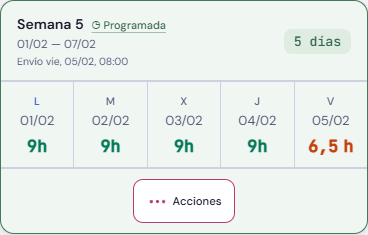
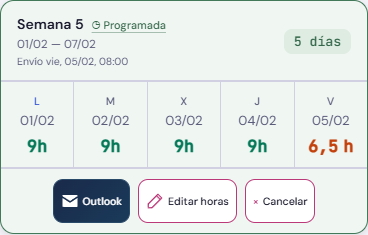
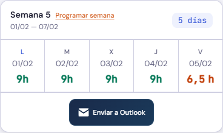
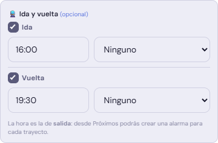

Acciones semanales y horas coordinadas · v549




Editar horas avisa según el correo esté programado o enviado. La primera modificación de un día pendiente muestra el cambio concreto antes de guardarlo; aceptar se recuerda durante 20 minutos y cancelar no se recuerda. Esta confirmación no oculta los avisos de semanas programadas o enviadas.
En los eventos grandes, inicio e ida y fin y vuelta se actualizan en ambos sentidos. Cambiar a Ninguno conserva las horas. Los datos anteriores no se modifican al abrir o cancelar el formulario.
Ejemplos ficticios. Se actualiza únicamente la captura principal de Home y estos ejemplos; se conservan las demás imágenes y revisiones. Las pruebas no envían ni programan correos reales.